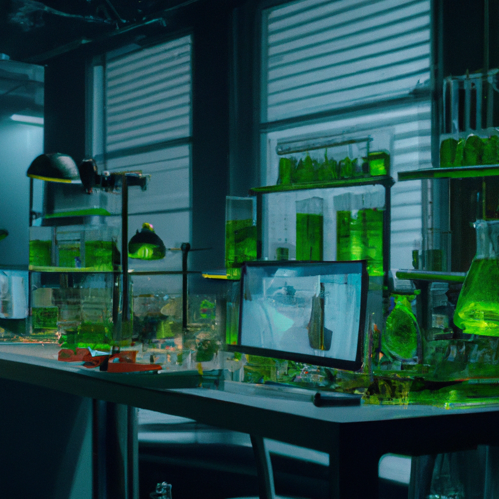
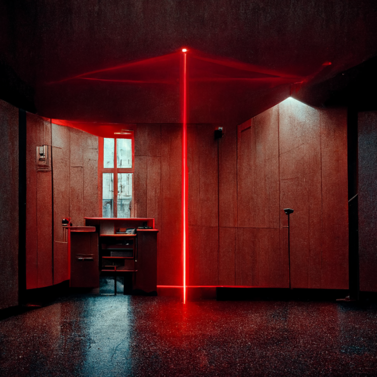
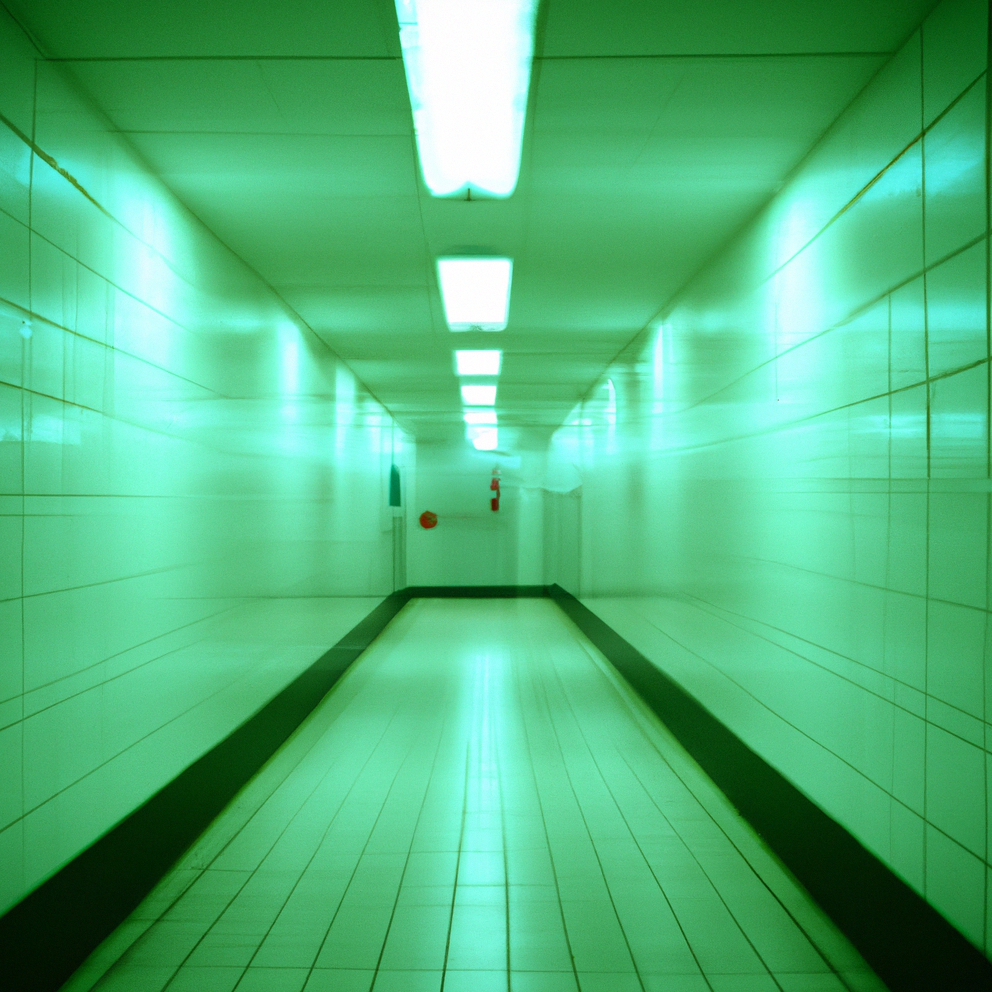

SQUEAMISH
SQUEAMISH
At midnight, which is much past "lights out", we will awaken. Having already packed our belongings and documents of the transitions, we will leave the dormatory silently. We will gather outside the dormatory and stick together until we reach the exit of the building.
Once we have collected outside the dorm, our next plan of action is to cross the science lab. The chances of staff being there are low, unless there are a few working very late. This is going to be tricky to confirm, but we will do our best to make sure it is empty, or create a distraction to get past them.
This will be the most challenging part of our escape-to get past the lazer room. This room has high-functioning sensors that are turn off the security alarms if you trigger motion, touch, sound, weight or scent. For this part, Isaiah has volunteered to deactivate the system. We have collected miscallenous tools and knick-knacks to help him do the mechanical work.
Finally-Our last stretch of the plan. The exit to the building lies at the end of a tunnel, or so we have understood from the blue-print. If we can make it to the exit, we will be free to leave. The odds of us reaching till this point are slim, but hope is all that we have. Hope, that we will safely make it out of this nightmare and return to our loved ones, who are fighting for us on the outside.
